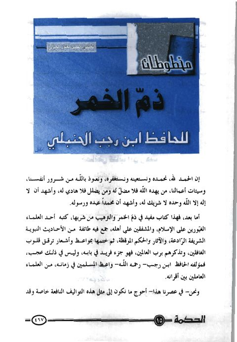

Downloads need an internet connection.
مخطوطات ذم الخمر لابن رجب الحنبلي
Authors: ابن رجب الحنبلي
Editors: مختار الجبالي
Publishers: مجلة الحكمة
**▫️ العنوان: مخطوطات ذم الخمر لابن رجب الحنبلي** ▪️ المؤلف: #عبد_الرحمن_البغدادي_بن_رجب_الحنبلي ▫️ المحقق: #مختار_الجبالي ▪️ الناشر: #مجلة_الحكمة ▫️ بلد النشر: المدينة المنورة، #السعودية ▪️ الطبعة: ع 15 ▫️ عدد الأجزاء: 1 ▪️ الصفحات: 35 ▫️ نوع الوعاء: #بحث ▪️ التصنيف الرئيسي: #الحديث_وعلومه ▫️ التصنيف الفرعي: #الأجزاء ۪